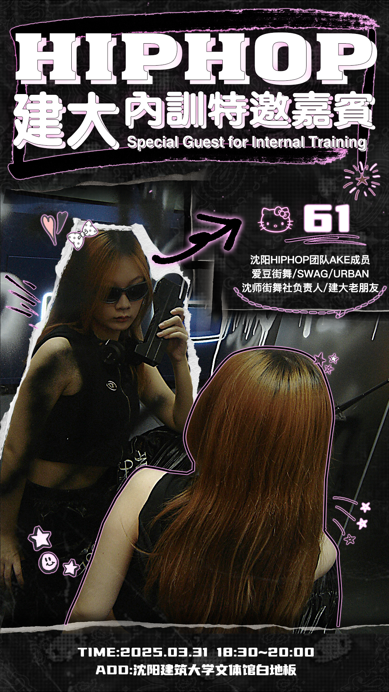
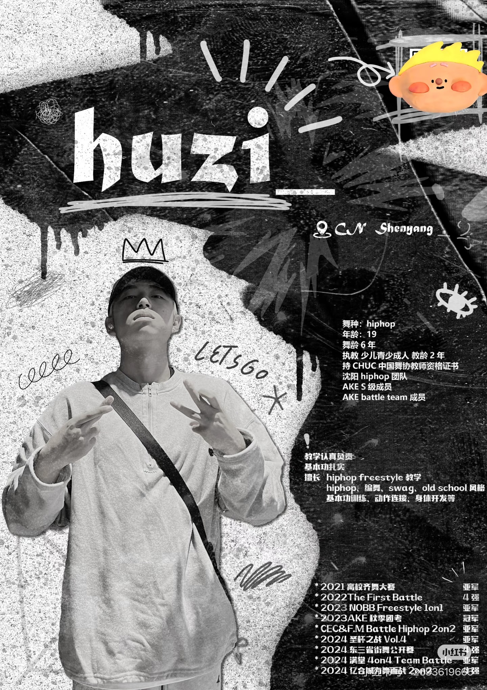

Workshop promotion · Shenyang, China · Studio commission
Make the class feel like a world people want to enter.
A set of dance-culture promotion pieces that turn teacher portraits, graphic attitude and class information into an immediate invitation.
These were promotional commissions for classes, special guests and instructor profiles across the street-dance scene.
I focused on the visual design and translated the supplied image materials into campaign-ready posters.
The design had to feel polished and aspirational, but still carry the attitude of street dance rather than read like a generic timetable.
One direction, multiple invitations
Different posters, the same instinct: make the culture feel immediate.
These are separate promotional pieces rather than one strict studio identity system. Each responds to its own teacher, class or guest, while using bold type, collage, portrait energy and street-visual references to make the invitation feel native to dance culture.


Outcome
The course launched smoothly, and the work led to continued poster commissions.
I did not track enrolment numbers after delivery, but the course was published as planned and I continued to receive requests for promotional materials. The project shows how a strong cultural read can make practical course information feel desirable, not administrative.